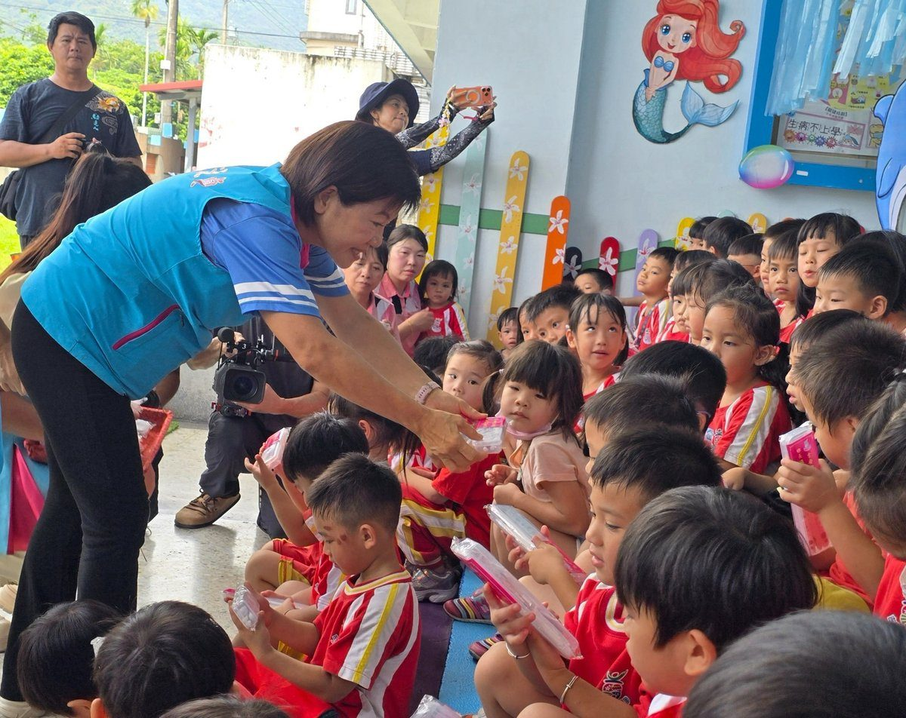

吉安鄉幼泡泡魔法王國啟動 游淑貞陪伴幼兒樂迎新學期

可樂電子報小編/編輯
吉安鄉立幼兒園於115學年度第一學期開學之際，特別舉辦「泡泡魔法王國－歡樂開學趣」活動，為幼兒們打造一個充滿驚喜與歡笑的開學體驗。隨著繽紛泡泡在園區飄揚，孩子們的歡呼聲此起彼落，不僅在互動中感受開學的樂趣，更透過遊戲與探索，培養學習興趣及班級向心力，為新學期揭開歡樂序幕。

鄉長游淑貞親臨活動現場，向每位入園幼兒頒發開學禮物，並獻上新學期的祝福與鼓勵。她更全程陪伴孩子們參與「雷恩老師泡泡魔法秀」，現場大型泡泡、繽紛彩色泡泡及夢幻煙霧泡泡的精彩演出，將全園幼生與教職員帶入奇幻的泡泡世界。當游淑貞利用道具製造巨大泡泡環繞幼兒時，孩子們興奮地驚呼連連，爭相舉手參與這場有趣的魔法體驗。

園方此次開學活動不僅有精彩魔法秀，更精心規劃「泡泡魔法闖關」，結合探索、藝術創作與團隊合作。例如，「彩虹泡泡實驗室」讓幼兒親手調配泡泡水，觀察色彩變化；「泡泡守護者」則考驗孩子的手眼協調與專注力；而「泡泡心願卡」則透過吹泡畫創作，凝聚班級向心力，留下珍貴開學回憶。游淑貞表示，吉安鄉幼致力於提供優質、友善的學習環境，讓孩子們在「玩中學、學中玩」的過程中快樂成長，培養多元能力與對校園的認同感。

游淑貞強調，幼兒是國家的希望，也是花蓮的未來。吉安鄉公所持續重視幼兒教育發展，希望透過多元創新的活動，讓孩子們在遊戲中認識環境，培養愛護自然的觀念。本次開學活動擺脫傳統制式，以海洋教育與遊戲共融概念，增進同儕情誼與班級凝聚力，讓孩子安心上學、快樂探索，逐步建立學習興趣與自信，為未來的學習之路奠定穩固基礎。

▶ 延伸觀看
📺 相關報導影片：點此於 YouTube 觀看完整報導